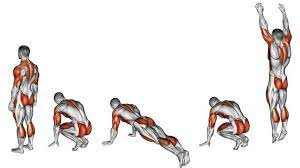

En casa · 15 de junio de 2021
Burpees

Burpees
Historia del nacimiento de los burpees
Los burpees fueron creados a finales de los años 30 por Royal Huddleston Burpee, un fisiólogo (no psicólogo, como se menciona en el texto) de Nueva York. Su objetivo era diseñar un ejercicio simple pero efectivo para evaluar la condición física general de una persona, midiendo fuerza, resistencia y agilidad. El ejercicio original consistía en una secuencia de movimientos que no incluía la flexión de codos ni el salto vertical completo que conocemos hoy, sino una versión más sencilla.
En 1942, durante la Segunda Guerra Mundial, el ejército de Estados Unidos adoptó los burpees como parte de sus pruebas de aptitud física para evaluar a los reclutas. La intensidad y versatilidad del ejercicio lo convirtieron en un estándar para medir la preparación física. Desde entonces, los burpees ganaron popularidad mundial, siendo utilizados por militares, atletas y entusiastas del fitness. Su reputación como un ejercicio agotador pero altamente efectivo lo ha convertido en un pilar de los entrenamientos de alta intensidad, como el CrossFit, y en un desafío que muchos "aman odiar".
Cómo ejecutar un burpee correctamente
El burpee clásico se realiza en una secuencia fluida de movimientos que trabajan todo el cuerpo. Aquí está el paso a paso, ajustado para mayor claridad:
- Posición inicial: Comienza en cuclillas, con las manos en el suelo frente a ti, aproximadamente a la anchura de los hombros.
- Plancha: Salta hacia atrás con ambos pies, aterrizando en posición de plancha (brazos extendidos, cuerpo recto, apoyado en manos y puntas de los pies).
- Flexión de codos: Realiza una flexión, bajando el pecho hasta casi tocar el suelo (opcional en versiones simplificadas).
- Vuelta a cuclillas: Salta hacia adelante con los pies, regresando a la posición de cuclillas con las manos aún en el suelo.
- Salto vertical: Ponte de pie rápidamente y realiza un salto explosivo, extendiendo los brazos hacia arriba por encima de la cabeza.
- Aterrizaje: Cae suavemente con los pies juntos, preferiblemente en puntas, y regresa a la posición de cuclillas para repetir el ciclo.
Nota: La técnica es clave para evitar lesiones. Mantén el Core activado, la espalda recta en la plancha y aterriza con suavidad para proteger las articulaciones.
Beneficios de los burpees
Los burpees son un ejercicio de cuerpo completo que combina fuerza, cardio y coordinación. Sus principales beneficios incluyen:
- Quema de calorías: Un burpee puede quemar unas 10-15 kcal (dependiendo del peso y la intensidad), y un entrenamiento de burpees puede quemar entre un 40% y 60% más grasa que ejercicios tradicionales de fuerza, debido a su alta intensidad.
- Aceleración del metabolismo: Al ser un ejercicio de alta intensidad, promueve el efecto "afterburn" (EPOC), donde el cuerpo sigue quemando calorías después del entrenamiento.
- Fuerza y resistencia: Trabaja múltiples grupos musculares (hombros, brazos, pecho, Core, glúteos, cuádriceps, femorales) simultáneamente, mejorando la fuerza funcional.
- Mejora cardiovascular y pulmonar: Aumenta la resistencia anaeróbica y aeróbica, fortaleciendo el corazón y los pulmones.
- Coordinación y agilidad: La secuencia de movimientos rápidos mejora la coordinación neuromuscular y la agilidad.
- Versatilidad: No requiere equipo, se puede realizar en cualquier lugar y es adaptable (versiones más fáciles para principiantes o más intensas para avanzados).
Consideraciones adicionales
- Variaciones: Existen versiones modificadas para principiantes (sin flexión ni salto) o avanzadas (con pesas o movimientos adicionales). Por ejemplo, el "burpee de 8 tiempos" incluye pasos adicionales para mayor desafío.
- Precauciones: Los burpees son exigentes para las articulaciones y el sistema cardiovascular. Es importante calentar antes, mantener una buena técnica y consultar a un médico si hay condiciones preexistentes.
- Incorporación en rutinas: Los burpees son ideales en entrenamientos HIIT (entrenamiento en intervalos de alta intensidad). Por ejemplo, realizar 10 burpees cada minuto durante 5 minutos o incluirlos en circuitos con otros ejercicios.